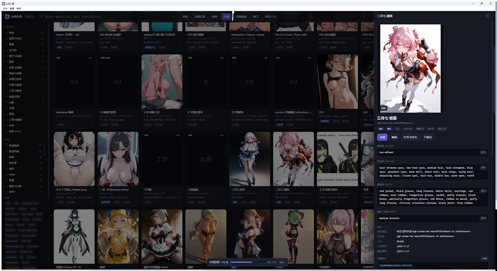
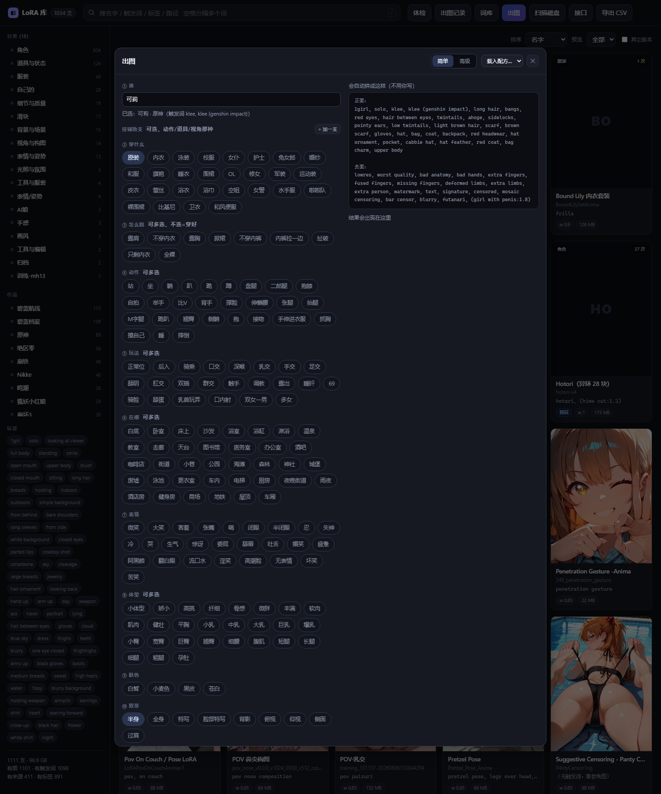
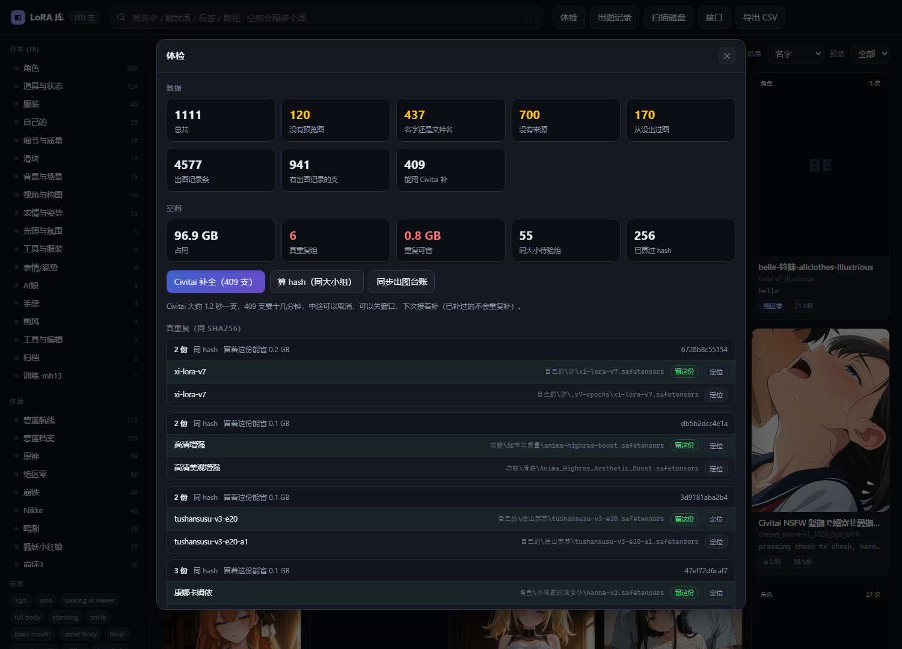

按作品、角色、服装分组，一屏看完预览图
指给它一个文件夹，它把里面的 LoRA 全扫出来，按作品、角色、道具、服装分好类。
对着 Civitai 补预览图、触发词、作者、标签。缺什么补什么，补完整了就不会再问你。
从模型文件里把训练标签读出来，自动分好哪是指人、哪是表情、哪是构图，不会一股脑塞进提示词。
按 SHA256 核对文件，重名的、缺预览的、坏的，一次列清楚。
接着本机 ComfyUI 出图，出完自动回填台账，哪支用过、效果如何，都有记录。
选角色、场景、服装，其余交给它；不满意就锁住满意的那一项，换别的。

不用记词，选几样，它自己拼

哪些能用、哪些缺东西，一眼看出来